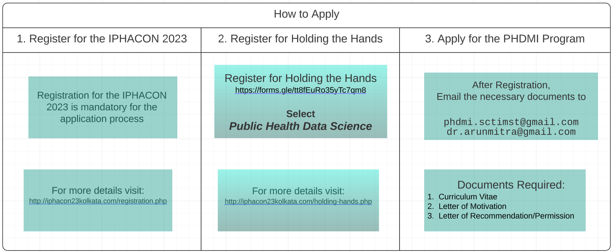

Welcome to the Public Health Data-Science Mentorship Initiative (PHDMI) website!
About PHDMI
The PHDMI program is designed to meet the growing demand for professionals with the skills and knowledge to manage the complex challenges of public health in the digital age. With the increasing use of technology and data in healthcare, there is a critical need for public health practitioners who can effectively collect, analyze, and interpret health data, as well as develop and implement data-driven interventions, policies and programs to address public health issues.
The PHDMI program seeks to bridge the skills gap in public health data science and enhance the skills of mid-career public health professionals in data science applications. Our program is a collaboration between the Indian Public Health Association (IPHA) and the Sree Chitra Tirunal Institute for Medical Sciences & Technology (SCTIMST), Trivandrum.
The program aims of identify, train and provide learning opportunities to ten early and mid-career public health professionals to develop the necessary skills and practical expertise in the applications of data science in public health. The PHDMI program can be an essential pathway for those seeking to advance their careers in public health or pursue doctoral studies in the field.
Key Features
- One-on-one mentoring from experienced professionals and domain experts
- Opportunities to develop skills in data science, effective communication of research, advocacy in data science, leadership, and more
- Access to workshops and trainings on a variety of public health topics
- Opportunities to build relationships with mentors, peers, and other professionals in the field
- Access to a network of alumni and other public health professionals
- Opportunities to conduct capacity building activities and academic events
- Exposure to cutting-edge research and best practices in public health and data science
- Access to a variety of resources and tools to enhance learning and development
- Opportunities to work on real-world public health projects and gain hands-on experience
Structure
The PHDMI program is spread over a period of 6 months and comprises of an online phase, a face-to-face phase, and a mentorship phase. Through the program, mentees will learn to develop and implement data-driven public health interventions, collaborate with peers, and build a network of skilled public health professionals.
The online phase of PHDMI will consist of weekly meetings between mentors and mentees. During these meetings, mentees will receive training in data science applications in public health.
| Online |
4 weeks |
Online |
Weekly meetings with mentors |
Mentees will be introduced to the core concepts in data science and its applications in public health. |
Expectations from the program and workplans will be discussed. |
The face-to-face phase of PHDMI will bring together mentors and mentees for a week of in-person training and networking.
| Face-to-Face |
1 week |
In-person Workshop |
In-person training and networking |
Mentees and mentors will come together for a week of in-person training and networking. |
This is expected to be done through a workshop, the details (dates and venue) will be decided at a later date. |
The mentorship phase of PHDMI will consist of ongoing mentorship and support for mentees as they work on public health data projects.
| Phase |
Duration |
Mode |
Activities |
Description |
Remarks |
| Mentorship |
5 months |
In-person and Online |
Ongoing mentorship and support |
Mentees will work on real-world public health data projects and receive ongoing mentorship and support from their mentors. |
This is expected to be done through One-Three month Project Internship positions at SCTIMST, Trivandrum. |
Faculty
The mentors for PHDMI are experienced professionals with expertise in data science and public health. The mentors will be responsible for providing guidance and support to mentees, sharing resources and materials, and evaluating mentee progress.
Prof. Biju Soman
Professor and Head,
Achutha Menon Centre for Health Science Studies,
SCTIMST, Trivandrum
Dr. Biju Soman is the Professor and Head of Achutha Menon Centre for Health Science Studies, Sree Chitra Tirunal Institute for Medical Sciences and Technology (SCTIMST), Trivandrum, Kerala. Dr. Soman had completed his MBBS in 1992, DPH in 1996 and M.D. (Community Medicine) in 1999 from University of Kerala and his MSc (Control of Infectious Diseases) in 2011 from University of London and DLSHTM in 2012 from the London School of Hygiene and Tropical Medicine (U.K.).
He has undergone advanced training in health informatics from Oslo University (Norway), Teaching Methodology from Boston School of Public Health (USA), Multilevel Modelling from Bielefeld University (Germany), and Advances in Geographic Information Systems (GIS) from National Remote Sensing Centre (Hyderabad). Dr. Soman teaches Public Health Technologies, Infectious Disease Epidemiology, and Database Management in Epidemiology modules at AMCHSS as part of the PhD and MPH curriculum. Some of his professional involvements at SCTIMST include Board of Studies (Health Sciences); Standing Academic Committee; and Research Advisory Committee. He also heads the Regional Technical Resource Centre (RTRC) of the Health Technology Assessment India (HTAIn) at SCTIMST, Trivandrum.
His current research and teaching are around health data science, including public health informatics, geospatial analysis, telemedicine, health technology assessment, and infectious disease epidemiology. He endorses open data initiative, FOSS resources, and reproducible research initiatives.
Prof. Rakhal Gaitonde
Senior Professor,
Achutha Menon Centre for Health Science Studies,
SCTIMST, Trivandrum
Dr. Rakhal Gaitonde is trained in community medicine at the Christian Medical College, Vellore, India, and completed his PhD in Health Policy from Umea University, Sweden. He is currently a Senior Professor at SCTIMST, Trivandrum and teaches Social Determinants of Health, Health Policy and Health Economics.
He has more than a decade’s involvement in Environment and Occupational Health, supporting a number of pollution-impacted communities through research and advocacy. He is a member of the Patient Advisory Board and International Editorial Advisory Board of The BMJ. He has recently been involved in formulating health policy documents for both the Kerala and Tamil Nadu State Planning Bodies. He is also the Commissioner in the Lancet Commission on ‘Reimagining India’s Health-care System’, an ambitious, cross-sectoral endeavour to lay out the roadmap for achieving universal health coverage for the people of India.
He is part of the core Data Science Team at AMCHSS where he is part of numerous funded data science initiatives and projects. His other areas of interest are health policy, implementation studies, health systems research and health inequity.
Dr. Arun Mitra Peddireddy
Research Scholar (DST Fellow),
SCTIMST, Trivandrum
Dr. Arun Mitra is currently pursuing his PhD in Health Data Science from Achutha Menon Centre for Health Science Studies, SCTIMST, Trivandrum. He has an MD in Community Medicine from Maharashtra University of Health Sciences and has worked as a Senior Resident at All India Institute for Medical Science (AIIMS), Bhopal before joining his PhD.
He received advanced training in Modern Modelling Techniques from London School of Hygiene and Tropical Medicine, UK. He is also certified in Digital Health and Imaging in Healthcare from the Indian Institute of Science (IISc), Bengaluru. He is a contributing member of the R Epidemics Consortium (https://www.repidemicsconsortium.org) based at Imperial College, London, UK. He is also a member of Society for Data Science (https://s4ds.org/) which is an international non-governmental organization working towards empowering people on data science. He is also a member of many professional bodies in India including the Indian Public Health Association (IPHA), Indian Association of Preventive and Social Medicine (IAPSM), and Epidemiological Foundation of India (EFI).
His current work is focussed on transforming health data into evidence for public health decision making. He won many accolades at various national and international venues on his work relating to health data science. He is also recipient of the few fellowships including the prestigious DST Fellowship from the Science for Equity, Empowerment and Development (SEED) Division, Department of Science and Technology, Govt. of India.
Wg Cdr (Dr.) Gurpreet Singh
Assistant Professor & Senior Medical Officer (SMO),
Armed Forces Medical Services
Dr Gurpreet Singh is a PhD Scholar at Achutha Menon Centre for Health Science Studies, Sree Chitra Tirunal Institute for Medical Sciences and Technology, Trivandrum. Dr Gurpreet is also a serving officer in Indian Armed Forces and is serving as Public Health Specialist and Epidemiologist in the parent organization. He completed his MBBS and MD (Community Medicine) from Armed Forces Medical College, Pune in 2007 and 2015 respectively, DNB (Preventive and Social Medicine) from National Board of Examinations, India in 2016.
He is recipient of Director General Armed Forces Medical Services Gold Medal, President National Board of Examinations Gold Medal, Certificate of Merit from Maharashtra University of Health Sciences, and General Officer Commanding Medallion (15 Aug 2017). He has contributed chapters to a few books and has many peer-reviewed publications.
Presently, he is working on PhD program titled “Data Science approach to Spatio-temporal modelling of Dengue in Punjab, India”.
Program Coordinators
Research Officer,
SCTIMST, Trivandrum
PhD Scholar,
SCTIMST, Trivandrum
Other domain experts in the field may be invited as guest faculty to address other topics of importance.
Eligibility
To be eligible for PHDMI, early- and mid-career public health professionals in India must meet the following criteria:
- Hold a relevant degree, such as an MBBS, MD, MPH, or others in Public Health.
- Have some experience in research.
- Possess basic knowledge of statistical software and data management tools.
Application Process

Register for IPHACON 2023
Register for Holding the Hands
Apply for PHDMI Program
Check Eligibility Criteria and Application process.
Send required documents to:
phdmi.sctimst@gmail.com
dr.arunmitra@gmail.com
Last date for Application: 25th March 2023
Candidates are required to the following documents:
- Curriculum Vitae
- A letter of motivation from the candidate
- Letter of Recommendation/Permission from the department or institute head if applicable.
Selection
The selection process for PHDMI will consist of the following steps:
- Application process: Interested candidates must submit an application, including a resume and a statement of purpose.
- Review process: The review process will involve evaluating candidates based on their academic background, research experience, and interest in public health data science.
- Notification: Selected candidates will be notified by email and will be provided with additional information about the program.